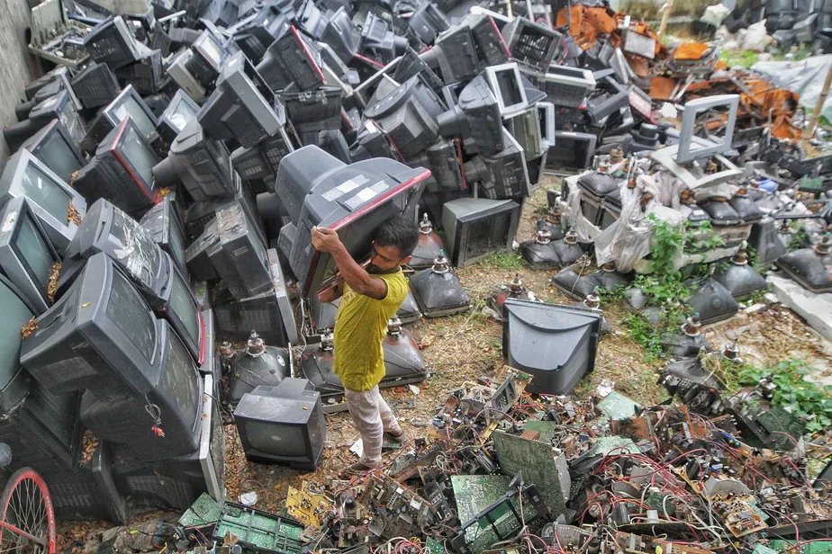
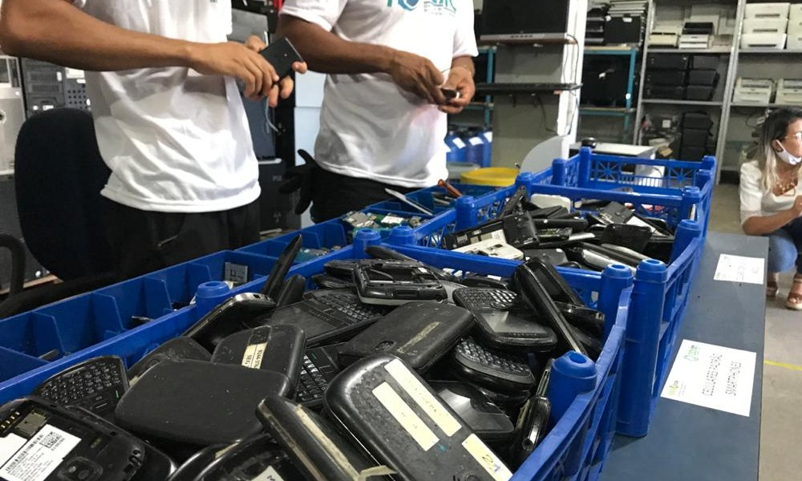

O que é resíduo eletrônico?

O resíduo eletrônico, também conhecido como e-lixo, é todo material eletrônico descartado, como computadores, celulares, eletrodomésticos, entre outros. Esse tipo de resíduo possui componentes que podem ser prejudiciais ao meio ambiente se não forem descartados corretamente.
Impactos do resíduo eletrônico
O descarte inadequado de resíduo eletrônico pode causar contaminação do solo, água e ar, devido às substâncias tóxicas presentes em seus componentes. Além disso, o descarte incorreto contribui para a exploração de recursos naturais e a geração de mais lixo eletrônico.
Como descartar corretamente
- Verifique se é possível reutilizar ou doar os equipamentos eletrônicos.
- Procure postos de coleta e empresas especializadas em reciclagem de resíduo eletrônico.
- Não descarte os equipamentos no lixo comum.
- Remova seus dados pessoais dos dispositivos antes do descarte.